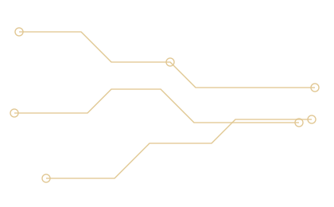
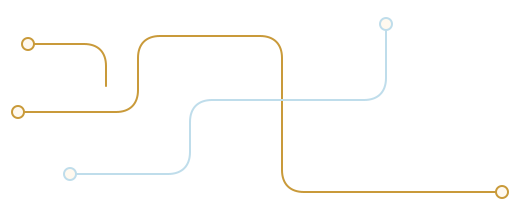

Modern IT Consultant
Complete IT Solutions for Smarter Business
Bintang Computer Feira membantu bisnis Anda membangun sistem IT yang lebih modern, aman, efisien, dan siap berkembang.
Fast responseDirect technical handlingScalable setup


Modern IT Consultant
Bintang Computer Feira membantu bisnis Anda membangun sistem IT yang lebih modern, aman, efisien, dan siap berkembang.
Problems We Solve
Banyak bisnis berkembang lebih cepat dibanding sistem operasionalnya.
Awalnya semua masih terasa aman. Data masih dicatat manual, komunikasi masih lewat chat pribadi, monitoring masih mengandalkan perkiraan, dan file masih tersebar di banyak device.
Namun ketika bisnis mulai berkembang, masalah mulai muncul.
Kami hadir membantu bisnis membangun sistem IT yang lebih modern, lebih rapi, lebih aman, dan lebih siap berkembang.
Karena teknologi seharusnya membantu bisnis bertumbuh, bukan malah menjadi hambatan operasional.

About Bintang Computer Feira
Bintang Computer Feira hadir sebagai partner teknologi yang membantu bisnis membangun sistem kerja yang lebih modern, efisien, aman, dan siap berkembang di era digital.
01
Kami membantu bisnis membangun sistem kerja yang lebih modern, efisien, aman, dan siap berkembang di era digital.
02
Kami memahami tantangan nyata seperti perangkat tidak optimal, jaringan tidak stabil, monitoring belum terintegrasi, aplikasi outdated, dan website yang tidak lagi representatif.
03
Kami tidak hanya menyediakan perangkat atau jasa teknis, tetapi menghadirkan solusi IT yang dirancang sesuai kebutuhan nyata operasional bisnis.
04
Layanan kami mencakup IT procurement, network & server, CCTV, PABX, custom application, hingga website modern dan refactor system.
Teknologi yang baik bukan yang paling rumit, tetapi yang paling membantu bisnis bekerja lebih cepat, lebih rapi, dan lebih produktif.
Core Services
Dari perangkat kantor sampai aplikasi custom, semua disiapkan agar operasional lebih stabil, aman, dan mudah dikembangkan.
Device Solution
Penyediaan komputer, laptop, printer, scanner, monitor, UPS, peripheral, dan kebutuhan IT kantor.
Infrastructure
Setup LAN, WiFi, router, firewall, server, NAS, backup system, dan private cloud untuk kantor.
Security
Pemasangan CCTV, titik kamera, DVR/NVR, recording system, dan remote monitoring via smartphone.
Communication
Setup PABX, IP PBX, extension internal, call transfer, voicemail, dan sistem telepon kantor.
Business System
Aplikasi custom, dashboard, reporting, HRIS, attendance, operational system, dan refactor aplikasi lama.
Digital Presence
Company profile, landing page, product catalog, redesign website lama, mobile responsive, dan SEO friendly.
Detailed Services
Setiap solusi dibuat fleksibel, mulai dari kebutuhan sederhana sampai setup yang lebih kompleks untuk operasional yang sedang bertumbuh.
IT Procurement & Device Solution
Kami membantu memilih, menyediakan, dan menyiapkan perangkat IT agar siap digunakan secara optimal sesuai kebutuhan kerja.
Investasi perangkat IT yang tepat membantu bisnis bekerja lebih cepat, stabil, dan efisien.
Network Solution
Kami membangun jaringan kantor, WiFi, router, firewall, server, NAS, backup system, dan private cloud sesuai kebutuhan bisnis.
Jaringan yang baik membuat data lebih aman, akses lebih cepat, dan kerja tim lebih terhubung.
CCTV System
Solusi CCTV modern untuk kantor, toko, gudang, rumah, sekolah, hingga area bisnis lainnya.
Dengan CCTV yang tepat, area penting bisa dipantau realtime dan lebih terkendali.
PABX System
Setup PABX dan sistem telepon internal kantor untuk komunikasi antar ruangan, divisi, atau cabang.
PABX membantu tim bekerja lebih terhubung tanpa komunikasi internal yang berantakan.
Custom Application & Refactor
Kami membantu membuat aplikasi custom atau memperbaiki aplikasi lama agar lebih modern, ringan, rapi, dan sesuai kebutuhan operasional.
Aplikasi yang baik mengikuti proses bisnis Anda, bukan memaksa bisnis mengikuti aplikasi.
Website Development & Refactor
Pembuatan website baru atau refactor website lama agar tampil lebih modern, clean, mobile friendly, dan profesional.
Tampilan yang modern dan rapi membuat calon customer lebih percaya sejak pandangan pertama.
0106
Auto slide · hover untuk jeda
Why Choose Us
Kami menerjemahkan kebutuhan operasional menjadi solusi yang tepat guna, mudah dipahami, dan siap berkembang bersama bisnis.
No relay
Kebutuhan dibahas langsung dengan tim teknis, sehingga keputusan lebih cepat dan tidak kehilangan konteks.
Right fit
Setiap perangkat dan sistem punya alasan bisnis yang jelas, bukan sekadar menambah teknologi.
Built to grow
Fondasi disiapkan agar cabang, tim, perangkat, dan workflow baru dapat ditambahkan tanpa mulai ulang.
After launch
Implementasi bukan garis akhir. Kami tetap hadir saat sistem perlu disesuaikan, dirawat, atau dikembangkan.
How we move
Featured Solutions
Perangkat, jaringan, server kecil, NAS, printer, dan workflow kerja kantor yang lebih tertata.
CCTV, recording, remote monitoring, dan penataan titik pengawasan untuk area penting bisnis.
Website, dashboard, reporting, dan aplikasi custom untuk proses bisnis yang lebih efisien.
Process
Kami pahami kebutuhan, kendala, dan target operasional bisnis Anda.
Solusi, kebutuhan perangkat, timeline, dan prioritas disusun secara realistis.
Instalasi, konfigurasi, atau development dilakukan dengan struktur yang rapi.
Sistem dicek agar fungsi utama berjalan aman sebelum dipakai operasional.
Kami bantu follow up dan penyesuaian setelah sistem mulai digunakan.